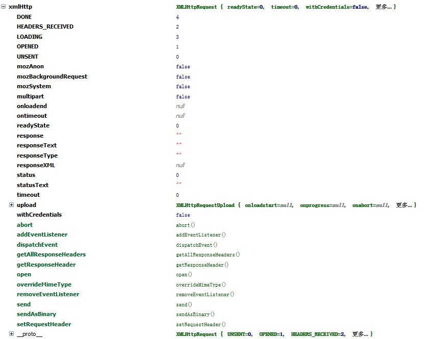
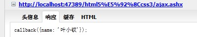
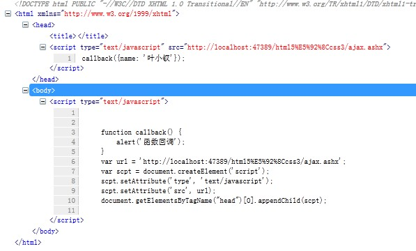
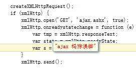

前言
ajax已经流行很多年了，现在来说它是否已经晚了呢？？？特别是有这样框架那样框架后，还有几个人认识原生ajax呢？我们每天都会用到的东西你到底对他了解吗？
在最近一次面试上不幸被问到了，原以为很熟悉的东西你会发现你对他根本不熟悉！要说熟悉AJAX的话你需要毫不犹豫回答以下问题：
1 不同浏览器下ajax实现上的差异 2 一次ajax请求过程中有哪几种状态值,不同状态值之间含义是什么
3 ajax在跨域的情况下会出现什么状况，以及解决方案
4 ajax和后台数据交互时会有什么编码问题吗？
5 最后可以说说XMLHttpRequest2有什么新东西
怎么样？各位能轻易的答上以上4点，便可直接忽略此文，若是只能很含糊的说出1、2点的话，便硬着头皮看我这篇水文吧，呵呵。
由于本文是边写边实验的，所以可能会有点乱，也可能会有我的唧唧歪歪的思考过程，请各位见谅。
另外，本人水平还很浅，写的东西必定有问题，若是文中有任何错误以及不足，请请一定指出来，多谢！
ajax简介
水文还是要有水文的样子，我这里还是需要简单介绍一番：
ajax全称：Asynchronous JavaScript and XML 即传说中的“异步JavaScript和XML”，他是由html、js、Dom等组成，这一杰出的技术可以将笨拙的web界面变成交互性的ajax应用程序。
ajax是一种构建网站的强大方法，他让我们桌面上只剩一个浏览器的想法不再是空谈，不再是妄想，虽说不大可能。。。
曾经我们的页面需要等待，等待服务器响应，等待屏幕刷新，等待请求返回和生成新页面。ajax的出现就让web页面的等待变得不那么明显，虽说只是感觉罢了（跟和美女在一起似的，感觉很爽）。。。
在一般的web应用程序中，用户提交表单后将整个表单发送到服务器，服务器将它转发给后台脚步（.net,java,php），脚步执行结束后将生成的新的htm页面返回，这个过程中就会出现我们前面所说的等待：屏幕变得一片空白，等待返回数据在重新绘制，这种交互性就跟你和一个美女XXOO每隔10秒才能动一下似的，这种感受，这种交互性怎一个差字了得？？？
ajax基本就是把js对象XMLHttpRequest对象放在web表单和服务器之间，当用户提交数据时只是将数据提交给js，然后由js发送给服务器并获取返回数据修改页面，过程中不会出现闪烁、消失或者延迟，传说中的异步请求。。。
XMLHttpRequest
该js对象为ajax的核心，前面说过了XmlHttpRequest是一套可以在Javascript脚本语言中通过http协议传送或接收XML及其他数据的一套API。XmlHttp最大的用处是可以更新网页的部分内容而不需要刷新整个页面。
首先我们来创建一个xml对象，需要注意兼容，我们先来个管中窥豹：
 初始化
初始化

1 <script type="text/javascript"> 2 var xmlHttp = false; 3 if (window.XMLHttpRequest) { 4 try { 5 xmlHttp = new XMLHttpRequest(); 6 } catch (e) { 7 xmlHttp = false; 8 } 9 } else { 10 try { 11 xmlHttp = new ActiveXObject('Msxml2.XMLHTTP'); 12 } catch (e) { 13 try { 14 xmlHttp = new ActiveXObject('Microsoft.XMLHTTP'); 15 } catch (ee) { 16 xmlHttp = false; 17 } 18 } 19 } 20 21 var s = ''; 22 </script>

ajax的请求响应模型
ajax基本流程基本如下：
1 从web表单中获取所需数据（不用表单也行）
2 建立连接url
3 打开服务器连接
4 设置数据返回回调函数
5 发送请求
xmlHttp.open('GET', url, true);
xmlHttp.onreadystatechange = function (e) {};
xmlHttp.send(null)
open时，最后一个参数为true将建立异步连接，false将等待服务器响应
onreadystatechage 可以指定数据返回时回调函数
send便是发送请求，参数便是要传的参数，没有参数可以填null
我们来写段后台程序试试：
前端
1 <!DOCTYPE html PUBLIC "-//W3C//DTD XHTML 1.0 Transitional//EN" "http://www.w3.org/TR/xhtml1/DTD/xhtml1-transitional.dtd"> 2 3 <html xmlns="http://www.w3.org/1999/xhtml"> 4 <head> 5 <title></title> 6 </head> 7 <body> 8 9 </body> 10 <script type="text/javascript"> 11 var xmlHttp = false; 12 function createXMLHttpRequest() { 13 if (window.XMLHttpRequest) { 14 try { 15 xmlHttp = new XMLHttpRequest(); 16 } catch (e) { 17 xmlHttp = false; 18 } 19 } else { 20 try { 21 xmlHttp = new ActiveXObject('Msxml2.XMLHTTP'); 22 } catch (e) { 23 try { 24 xmlHttp = new ActiveXObject('Microsoft.XMLHTTP'); 25 } catch (ee) { 26 xmlHttp = false; 27 } 28 } 29 } 30 } 31 32 createXMLHttpRequest(); 33 if (xmlHttp) { 34 xmlHttp.open('GET', 'ajax.ashx', true); 35 xmlHttp.onreadystatechange = function (e) { 36 var tmp = xmlHttp.responseText; 37 var s = ''; 38 } 39 xmlHttp.send(); 40 41 } 42 43 44 var s = ''; 45 </script> 46 </html>
服务器端代码
1 <%@ WebHandler Language="C#" Class="ajax" %> 2 3 using System; 4 using System.Web; 5 6 public class ajax : IHttpHandler { 7 8 public void ProcessRequest (HttpContext context) { 9 context.Response.ContentType = "text/plain"; 10 string name = context.Request.QueryString["name"] == null ? "" : context.Request.QueryString["name"].ToString(); 11 context.Response.Write("ajax 返回：" + name); 12 } 13 14 public bool IsReusable { 15 get { 16 return false; 17 } 18 } 19 20 }
其实我们定义的会函数会被执行三次，状态码依次返回2,3,4，现在我们来看看这个状态码是什么：
xmlHttp.readyState:
0 ：未初始化，还没有调用send()方法
1 ：载入，已调用send()方法，正在发送请求
2 ：载入完成，send()方法执行完成，已经接收到全部响应内容
3 ：交互，正在解析响应内容
4 ：完成，响应内容解析完成，可以在客户端调用了
意思是我们只需要关注4便可以了。
另外几次请求返回数据一致可能是因为浏览器缓存原因，请各位自己加上随机数哟。
那些年我们一起跨的域
ajax也会遇到跨域问题的，我们所说的跨域现在一般都是跨域请求数据，跨域提交数据这种事情好像只有html5的postMessage能做。
跨域请求数据的原理是，我们先在我们的页面上定义一个js函数，然后以script的方式请求数据，数据返回的字符串便会调用我们定义的方法：
xmlHttp.open('POST', 'http://localhost:47389/html5%E5%92%8Ccss3/ajax.ashx', true);
将前面代码url处做一个修改后，请求就没有响应了，我们先看看这个url会输出什么：
跨域
1 <%@ WebHandler Language="C#" Class="ajax" %> 2 3 using System; 4 using System.Web; 5 6 public class ajax : IHttpHandler { 7 8 public void ProcessRequest (HttpContext context) { 9 context.Response.ContentType = "text/plain"; 10 context.Response.Write("Hello World"); 11 } 12 13 public bool IsReusable { 14 get { 15 return false; 16 } 17 } 18 19 }
我们修改下后台代码：
修改后
1 <%@ WebHandler Language="C#" Class="ajax" %> 2 3 using System; 4 using System.Web; 5 6 public class ajax : IHttpHandler { 7 8 public void ProcessRequest (HttpContext context) { 9 context.Response.ContentType = "text/html"; 10 string callback = context.Request.QueryString["callback"] == null ? "callback" : context.Request.QueryString["callback"].ToString(); 11 context.Response.Write(callback + "();"); 12 } 13 14 public bool IsReusable { 15 get { 16 return false; 17 } 18 } 19 20 }
如此便会返回callback字符，
其实，说到异步跨域问题，我感觉就和ajax关系不大了，我想的是这样做：
跨域后台
1 <%@ WebHandler Language="C#" Class="ajax" %> 2 3 using System; 4 using System.Web; 5 6 public class ajax : IHttpHandler { 7 8 public void ProcessRequest (HttpContext context) { 9 context.Response.ContentType = "text/html"; 10 string callback = context.Request.QueryString["callback"] == null ? "callback" : context.Request.QueryString["callback"].ToString(); 11 context.Response.Write(callback + "({name: '叶小钗'});"); 12 } 13 14 public bool IsReusable { 15 get { 16 return false; 17 } 18 } 19 20 }
跨域前台
1 <!DOCTYPE html PUBLIC "-//W3C//DTD XHTML 1.0 Transitional//EN" "http://www.w3.org/TR/xhtml1/DTD/xhtml1-transitional.dtd"> 2 3 <html xmlns="http://www.w3.org/1999/xhtml"> 4 <head> 5 <title></title> 6 </head> 7 <body> 8 9 </body> 10 <script type="text/javascript"> 11 12 function callback() { 13 alert('函数回调'); 14 } 15 var url = 'http://localhost:47389/html5%E5%92%8Ccss3/ajax.ashx'; 16 var scpt = document.createElement('script'); 17 scpt.setAttribute('type', 'text/javascript'); 18 scpt.setAttribute('src', url); 19 document.getElementsByTagName("head")[0].appendChild(scpt); 20 21 </script> 22 </html> 23


如此一来，便跨域了！
针对跨域post的处理，一般是以form target指向一个隐藏的iframe实现的，比如我们最初的文件图片上传“ajax”的实现。
编码问题
若是页面采用utf-8编码，而服务器采用gbk的话，也许会出现编码问题，甚至引起莫名其妙的BUG：

这里便让中文不能解析。
HTML5中的XMLHttpRequest
老版本缺点： 只支持文本数据的传送，无法用来读取和上传二进制文件。 传送和接收数据时，没有进度信息，只能提示有没有完成。 受到"同域限制"（Same Origin Policy），只能向同一域名的服务器请求数据。
2.0改进：
可以设置HTTP请求的时限。 可以使用FormData对象管理表单数据。 可以上传文件。 可以请求不同域名下的数据（跨域请求）。 可以获取服务器端的二进制数据。 可以获得数据传输的进度信息。
作为XMLHttpRequest的改进版，IE9都还不支持呢，估计最新的IE10应该没问题了。
XMLHttpRequest Level2 在功能上有了很大的改进，比如2.0版本可以跨域啦！！！
跨域http请求包含一个origin头部，他为服务器提供http请求源信息，头部由浏览器保护，不能被程序更改，从本质上讲他与跨文档消息通信中消息事件的origin属性作用相同。
origin头部不同于早先的refer，后者referer是一个包含路径的完整url，路由可能包含敏感信息，浏览器不一定发送referer，但一定会发送origin。
算了，以上这块是抄的，我完全没有概念，反正意思是按照他的规则玩游戏，你就可以跨域！
我这里想要表达的重点其实是以下功能点：
XMLHttpRequest2.0支持了对进度的响应！确实是进度的响应，他让我们上传文件产生进度条变成了可能，之前仅有readystatechage一个事件能给用来响应进度，而且该事件并不兼容，如ie中就不会有状态3，更别说上传通信了，这种情况下要实现进度条是一件无比麻烦的事情：
我们来看看现在的事件列表
loadStart
传输开始时触发
progress
上传过程中触发，他的e属性会包含很多有用信息哦。
abort
取消上传时触发
error
出错时触发
load
接受完数据触发
loadend
传输结束触发，无论成功与否
若想查看例子请猛击： 一次上机面试题带来的感悟【学习的感觉、学习的方法】
此段参考资料：XMLHttpRequest Level 2 使用指南
结语
今天，我们一起学习了AJAX的相关知识，我感觉还是挺有用的。。。。若是有任何错误请指出哦。
如果你觉得这篇文章还不错，请帮忙点击一下推荐，谢谢！